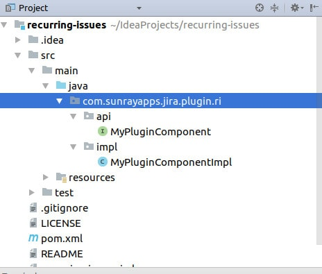

The project is ready , and IntelliJ can open it. It's time to go through the project's files and customize the plugin.
Look at the project's structure

If you're familiar with Maven, then you're home. The project looks like every other Maven project.
The most important file is pom.xm. It describes the build process. We're going to start with this one. We already customized part of it (groupId, artifactId and version). Now it's a good time to change the organization details and plugin description. The changes will be visible in the UPM. You can also remove dependencies which we don't use (atlassian-plugins-osgi-testrunner, gson). From maven-jira-plugin we should remove com.sunrayapps.jira.plugin.ri.api. We do not plan to export API.
The last property in the file we would like to configure is jira.version. We're going to support Jira 7.1+ (Jira versions which active support). It's a good practice to use the lowest Jira version here. It'll help us to be compatible with the oldest version. It's always easier to achieve forward compatibility. It may be even impossible to backport changes to the older version. For example, in case we use a new API that doesn't exist in the older one. If you're going to create plugin only for private use, then you can set your current Jira version.
Now we can remove generated component and interface (MyPluginComponent and MyPluginComponentImpl). And all the tests. We don't need them. After all the changes applied, you may have to reimport maven setting in your idea.
Rerun our customized plugin and check if it works. In case of problems, it may be necessary to clean the project before 'atlas-debug'. This time the script downloads Jira 7.1.0 war.
This time the script downloads Jira 7.1.0 war. The next most crucial file is "atlassian-plugin.xml". It contains information about the plugin. For example, name, description, icons, and plugin's key. The key needs to be unique globally and immutable. You can't change it after a release. You also cant share it with another plugin. By default, it's groupId plus artifactId. The file also describes resources provided by the plugin. We're going to go into details later. Variables like ${project.description} are injected from pom.xml. You can use here any property defined in the pom file.
As you probably notice, we have two plugins with the same name running. We also have two "atlassian-plugin.xml" files. We don't need the one that is in the test package. The one is an example of wired-tests. We don't use it now and don't plan to use it in the foreseeable future. It can be removed.
It's worth to mention LICENSE file. It is there to remind you, that it's important to choose a license for your add-on. Usually, I change the license in one of the first commits, then I don't have to remember about it. If you prefer to do the things at the last moment, remember to change it before the release.
The last file is README describes some of Atlassian's SDK commands. We already used atlas-debug to run the plugin (link to the first blog post). At the end of the file, you can find a link to the documentation.
The project also contains icon, logo, CSS and js and i18n file. I'm going to cover it later in this tutorial. Next time we're going to find an entry point for our plugin.